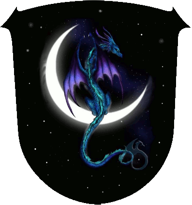

|

|
Das schwarze Brett
|
|
| Übersicht,
Anschläge und Stammtisch (RPG) |
|
Sambi....verwirrt oder ???
|
| Felerian (RIP) |
*viele monde ist es her,als ich die nation volk des drachenordens gründete und meiner stadt den namen dragon`s dom gab.
direkt danach,kam sambi zu mir und griff mich an
und erteilte mir eine ke. auf meine frage,warum dies so sei und was ich denn getan hätte,was dieses rechtfertigen würde,kam nur ein lapidares
"weil ich den namen nicht mag,ich es kann,du nichts dagegen tun kannst und ich dein gott bin"*
zu dieser zeit,war kardinälin lukrezia von der zinne,noch bei mir und wollte etwas dagegen tun,
da sambi ja vertreter pherons ist und es doch nicht sein kann,das er sich als vertreter der lichtsieben,selbst als gott bezeichnet.
danach kam eine phase der ruhe und ich konnte in frieden weiter leben.
doch scheint dies nun wieder vorbei zu sein.
gestern lief ich in einen wachdienst von ihm und
landete mit der kompletten truppe im tempel.
nur weil ich die ke von sambi nicht erwiederte,da
ich darin keinen sinn sah.
denn ich möchte in frieden leben und in frieden gelassen werden.
doch gestern erwiederte ich nun seine ke und nun plündert er meine gebäude und greift mich an.
und alles wieder mit der einstigen erklärung.
nun frage ich öffentlich:
darf sich ein vertreter der lichtsieben,als gott
bezeichnen und andere versuchen zu unterjochen?
nur weil dieser nicht an die stärke dieses tyrannen heran reicht und kein mann des krieges sein will und ist?
gibt es nocht recht auf dieser welt und irgend jemanden,der mir helfen kann und mag?
Felerian,
Patenonkel von Finn und Noia
Zur 12. Stunde am 53.Blumenmond im Jahre 449 |
22.01.12 11:57
 |
|
Sìn Mortiarea
  |
Es kann der Frömmste nicht in Frieden leben, wenn es dem bösen Nachbarn nicht gefällt ... Ihr scheint so einen Nachbarn zu haben.
Doch was nun tun?
Nicht nur durch den geistigen Ausfluss von Gerippa dem Arschgesicht ist uns allen bewusst, dass Pheronis nicht zwingend die Weisheit mit Löffeln gefressen haben müssen und so ist sich eben dieser Sambi wohl nicht über den Unterschied zwischen Priester und Gott im Klaren. Vielleicht wendet Ihr Euch diesbezüglich mal an seine Vorderen, sei es den Pheronverkünder oder einen Verantwortlichen in Pherons Legion.
Oder aber Ihr springt über Euren Schatten und trainiert doch ein paar Runden und zeigt Sambi wo der Hammer hängt. Wie die Geschichtswichtel soeben ausgerufen haben ist zumindest dieser Gott nicht unbesiegbar.
Lady Sìn Mortiarea,
Vorsteherin von Thanateion
Zur 16. Stunde am 53.Blumenmond im Jahre 449 |
22.01.12 12:53
|
|
Galaton Dragus
  |
Mir wäre es zudem noch ganz recht, wenn ihr eure Privatfehden auch privat belassen würdet. Es gibt immer 2 Medaillen einer Münze, und nur die eure zu betrachten...ermüdet ein wenig. Tragt es aus wie ein Mann...wie meine Vorrednerin bereits erwähnte, und lernt halt aus euren Fehlern oder gebt bei oder was auch immer!
Wo kämen wir dahin, wenn ich alle meine Privatfehden öffentlich anschlagen würde *kopfschüttelt*
Graf Galaton Dragus,
Vorsteher von Kristallhafen,
Ehemann der reizenden Tonja Dragus
Zur 20. Stunde am 53.Blumenmond im Jahre 449 |
22.01.12 13:47
|
|
| Jeremias Saimerej (RIP) |
Da kämen wir zu abendfüllenden lese-stunden und viel Wein dabei.
Amüsante Unterhaltung garantiert Galaton.
Und auch ich stimme den beiden Vorrednern zu,tragt es aus wie ein Mann.
Sir Jeremias Saimerej,
Vorsteher von Quel Esta
Zur 21. Stunde am 53.Blumenmond im Jahre 449 |
22.01.12 14:00
|
|
Dorni Dornenherz
  |
Jeremias, denk mal nicht immer nur ans Saufen, in welcher Nation bist Du ?
*kopfschüttelnd das Anschlagsbrett verläßt*
Hohepriester Dorni Dornenherz,
Vorsteher von Laguna,
Hohepriester im Dienste des einzig wahren Glaubens an Pheron,
Legionär Pherons,
Ehemann der reizenden Hadrielia Dornenherz
Zur 23. Stunde am 53.Blumenmond im Jahre 449 |
22.01.12 14:23
|
|
Lyra Callionymus
  |
Fragt doch Cordelia, ob sie Euch hilft.
Sie hat ja genug Erfahrung im aussprechen von ungerechtfertigten Kriegserklärungen gegen Leute, die einfach nur in Frieden leben wollen.
Lady Lyra Callionymus,
Vorsteherin von Atlantis,
Priesterin im Dienste des einzig wahren Glaubens an Bendur,
Anführerin der glorreichen Nation "Freie Walfänger",
Siegerin im Steinekullern 440 und 444
Zur 1. Stunde am 54.Blumenmond im Jahre 449 |
22.01.12 14:49
|
|
Berenike
  |
*zu Dorni sagt: *
Jeremias ist doch in deiner nation ;)
und ich wundere mich ab und zu auch,
wo er das her hat
*schmunzelt sagt und gleich weiterzieht*
Freifrau Nell,
Vorsteherin von Nell`s Burg,
Mutter von Jeremias,
Verlobte des ehrenwerten Spartacus
Zur 8. Stunde am 54.Blumenmond im Jahre 449 |
22.01.12 16:26
|
|
| Moerdore (RIP) |
Ich bin ja nun recht neu in diesen Landen, kenne weder die Sitten und Gebräuche, noch die Wesen und Werte.
Doch es scheint mir wie Hohn, wenn man jemanden der um Hilfe gegen einen übermächtigen Feind bittet auffordert sich wie ein Mann zu verhalten.
Wie mir scheint hat der werte Felerian sich seinem Peiniger ja bereits entgegengestellt und wurde vernichtend geschlagen.
Zudem verwundert mich dass hier öffentlich so ein Verhalten von einem Repräsentanten eines der Lichtsieben geduldet wird, es scheinen hier ja anarchische Zustände zu herrschen.
In meiner Heimat gibt es ein Sprichwort: Für den Triumph des Bösen reicht es, wenn gute Menschen nichts tun.
Wie bereits erwähnt bin ich neu hier, besitze keine Armeen und kein Vermögen, deshalb habe ich vermutlich auch mehr Verständnis für eure Situation als der großartige Galaton Dragus.
Wer viel Macht besitzt sollte große Taten vollbringen, doch meist lassen sich die wirklich Mächtigen nur zu großen Worten hinreißen, die darauf hinauslaufen dass die schwachen selbst Schuld an ihrer Schwäche sind.
Dies dient in aller Regel nur der Beruhigung des eigenen Gewissens, dass einem eigentlich sagt man solle helfen.
Ich würde euch empfehlen den Pheron Konvent in Kenntnis zu setzen und diesen direkt um Unterstützung zu bitten.
Solange sie dieses Verhalten tolerieren und den Täter sogar in ihren Reihen dulden, machen sie sich selbst direkt verantwortlich für dessen taten.
Sollte dies keinen Erfolg zeigen organisiert eure Verteidigung, selbst das schärfste Schwert kann keine Mauern einreißen. Stellt Ritter ab um eure Gebäude zu beschützen oder verlagert sie, soweit möglich in die Stadt eurer Nation?
Findet die Schwäche eures Feindes, jeder hat eine, und wenn ihr sie gefunden habt lasst nicht locker diese Stelle anzugreifen.
Wenn euch auch dies nicht gelingt, nehmt eurem Feind die Motivation. Wenn irgend möglich stoppt die Produktion eurer Gebäude, wenn er euch überfällt soll er mit leeren Händen abreisen!
Wenn euch auch dies nicht gelingt, wendet euch an mich, es wird sicher lange dauern bis ich euch mit all meiner Kraft nur so weit helfen kann wie es die altklugen Damen und Herren hier mit einem einzigen Schwertstreich könnten, doch ich will tun was in meiner Macht steht.
Moerdore
Zur 10. Stunde am 54.Blumenmond im Jahre 449 |
22.01.12 17:02
|
|
Alberix, Sohn des Duglim
 |
Nun Moerdore, wie Du selbst sagst bist Du noch nicht lange in diesen Landen. So höre einige Worte eines alten Zwergenkriegers.
Du nennst den Konvent verantwortlich für die Taten seiner Geweihten. Doch nach wessen Ermessen sollen diese Taten bewertet werden? Nach der Stärke des Angegriffenen?
Darf von nun an keiner meiner weltlichen Gegner mich angreifen, der einem Konvent vorsteht und möglicherweise stärker ist als ich?
Was soll das?
Die Geweihten haben Aufgaben im Namen des Konvents - doch weltlich sind diese meist auch in Nationen, Lehnsketten und sonstigen Verpflichtungen verstrickt. Muss von nun an ein Geweihter sich lossagen von jeglicher Weltlichkeit? Keiner Nation angehören, keiner Lehnskette angehören, auf keinem Flecken der Scherbe heimisch sein, keinen Handel betreiben, sich keine Freunde und keine Feinde machen?
Welchen Gebotes der Lichtsieben hat sich der Geweihte Sambi missachtend schuldig gemacht?
Keinem!
Nur weil sich jemand nicht so verhält wie Du es von ihm erwartest, ist es noch kein Verbrechen, nicht Deinen Erwartungen zu entsprechen.
Es steht Dir aber frei, selbst zu handeln - ich würde es Dir gar anraten so zu handeln wie es Dir Dein Gewissen vorgibt.
Der alte Duglim sagte schon immer: Du kannst andere für Probleme verantwortlich machen und es wird nichts ändern - Du kannst sie aber selber zu lösen versuchen und andere werden an Deine Seite eilen und Dir helfen.
Kardinal Alberix, Sohn des Duglim,
Vorsteher von Bethana,
Kardinal im Dienste des einzig wahren Glaubens an Tura,
Grabwächter der Lagerinsel
Zur 12. Stunde am 54.Blumenmond im Jahre 449 |
22.01.12 17:22
|
|
Dorni Dornenherz
|
*Alberix ein Angebot zum Konventwechsel unterbreitet*
.. dem wäre nichts hinzuzufügen
Hohepriester Dorni Dornenherz,
Vorsteher von Laguna,
Hohepriester im Dienste des einzig wahren Glaubens an Pheron,
Legionär Pherons,
Ehemann der reizenden Hadrielia Dornenherz
Zur 12. Stunde am 54.Blumenmond im Jahre 449 |
22.01.12 17:28
|
|
| Frances el Ferror (RIP) |
Naja wäre für Euch sicher hilfreicher gewesen mir einen Taube, eine Schnecke oder sonstiges Briefungeziefer zu schicken die Angelegenheit zu klären. Da das Kätzchen aber nun schon im Trog ersoffen ist muss ich ja nicht mehr meine Hände nass machen hoffe ich.
Baronesse Frances el Ferror,
Anführerin der glorreichen Nation "Sheydanischer Freihandelsbund",
Leibwichtel Wasils
Zur 13. Stunde am 54.Blumenmond im Jahre 449 |
22.01.12 17:38
|
|
| Moerdore (RIP) |
Galaton, die Kriegserklärung, weil ich euch altklug nannte (wohlgemerkt nicht einmal direkt - doch jeder zieht sich halt den Schuh an der ihm passt) allein hätte schon genügt um mir zu zeigen dass ihr außer dem bereits genannten noch arrogant, selbstherrlich und ein herrischer Tyrann seit.
Eure fadenscheinige Erklärung per Taube bescheinigt mir lediglich erneut eure Verliebtheit in euch selbst und erfüllt somit keinen weiteren Zweck, denn den der Selbstbeweihräucherung.
Spart euch bitte das Papier!
Werter Felerian, wie mir scheint wird in diesen Landen die Tyrannei geduldet und jede Kritik an den Tyrannen mit dem Krieg bestraft.
Ich hatte gehofft mit meinen Worten an die Rechtschaffenheit der Mächtigen zu appellieren, doch hier melden sich nur die Lehnsherren und Freunde des Agressors zu Wort um dessen Verhalten zu legitimieren.
Es scheint mir Ihr müsstet euch nur unter die Lehnsschaftt des Herrn Dragus fügen und würdet sobald von Angriffen verschont bleiben.
Auch habe ich das Gefühl das jene die hier davon sprachen man solle seine Fehden selber lösen, sich selbst einmischen würden wäret Ihr der Agressor.
Solltet Ihr nicht bereit sein euch den Tyrannen unterzuordnen und das hoffe ich sehr, solltet Ihr Kontakt zu deren Feinden aufnehmen, was Ihr braucht ist eine Koalition die an Stärke an den Gegner heranreicht. Und der Feind eures Feindes ist euer Verbündeter.
Alberix, was Ihr da niederschreibt hat doch sehr wenig mit einer ernst gemeinten Argumentation zu tun. Ihr kennt ernsthaft nicht den Unterschied zwischen einem Räuber und einem Wächter? Wichtig ist selbstredend nicht die Stärke und es geht hier auch nicht darum Angriffe auf Schwächere zu verdammen.
Es gibt Wesen hier in diesen Landen, in meiner Heimat und überall wo es Leben gibt, die versuchen zu erhalten und zu schaffen und es gibt Wesen die versuchen zu zerstören und zu verhindern.
Diese Wesen wiederum haben Eigenschaften die erhalten oder zerstören.
Wer das Leben respektiert, der fördert die erhaltenden Elemente (wie Liebe, Freundschaft, Glück, Gesundheit) und bekämpft die zerstörerischen (Hass, Fehde, Trauer und Krankheit).
Dies zu unterscheiden ist oft keine Frage der Logik, sondern des Herzens.
Wenn Ihr einen Angriff mit der Begründung "weil ich den namen nicht mag,ich es kann,du nichts dagegen tun kannst und ich dein gott bin" nicht als zerstörerisch, sondern als ein Zeichen der Liebe und Gesundheit anerkennt, so tut Ihr mir leid, denn euer Herz ist mit großer Blindheit geschlagen.
Natürlich ist es auch möglich dass dieser Angriff durchaus gerechtfertigt war, weil er z.B. der Selbsterhaltung Sambis diente, dies habe ich allerdings jederzeit berücksichtigt und daher nie behauptet man solle sie oder irgendwen bestrafen.
Ich habe lediglich Hilfestellung gegeben für den Fall dass ich in der selben Situation wäre, exakt wie Felerian sie beschrieben hat, einfach aus dem Grund, weil dem inhaltlich bisher einfach niemand widersprochen hat.
Ich hätte andere Worte gefunden wenn auch nur einer der Anwesenden in Aussicht gestellt hätte das es eine Rechtfertigung für das Verhalten Sambis gibt. Aber das hielten die Herren ja nicht für notwendig, da sie wissen das es keiner Rechtfertigung bedarf um handeln zu können sondern MAcht und die haben sie, also was sollte sie Gerechtigkeit kümmern?
Moerdore
Zur 19. Stunde am 54.Blumenmond im Jahre 449 |
22.01.12 19:11
|
|
Alberix, Sohn des Duglim
|
*Hebt eine Augenbraue*
Moerdore - Du gehörst jenen an, die sich ihr Argument dann heranziehen, wenn es ihnen genehm ist und sie verschweigen, wenn es unbequem erscheint.
So Du meinen vorherigen Ausführungen einigermassen folgen konntest, habe ich beschrieben, dass Sambis Geweihtenschaft nicht mit seinem Tun in Verbindung gebracht werden kann.
Des weiteren habe ich aufgezeigt, dass er kein Gebot gebrochen hat.
Zu guter Letzt habe ich dargelegt, das Stärke und Schwäche von Angreifer und Opfer schwerlich zur Bewertung der Richtigkeit einer Handlung herhalten können.
Kein Wort verlor ich darüber ob ich selbst das Handeln von Sambi billige oder nicht - und es gibt einen guten Grund.
Es steht mir nicht an zu urteilen, so nicht ein Gebot der Lichtsieben verletzt wurde.
Würde ich jedem Gejammer hinterher eilen, das seiner Meinung nach ungerecht behandelt würde, käme ich wohl dich nächsten einhundert Jahre nicht mehr zum schlafen.
Als Jungzwerg wollte ich einst ein Wolfsjunges füttern, das sich in einen unserer Stollen verirrt hatte und wohl ob des harten Winters arg Hunger litt. Der alte Duglim hielt mich davon ab und sagte zu mir:
Du kannst den Wolf nun füttern und mehrere Dinge können sich daraus entwickeln.
Der Wolf könnte den Winter überleben und nächsten Frühling die Schafherden von Bergor angreifen. Bergor hat viele Mäuler zu stopfen und der Verlust mehrerer Schafe könnte ihn arg treffen.
Oder vielleicht bringt Deine Fütterung nur, dass der Wolf eine Woche länger leidet, bevor er elendlich verhungert.
Du kannst ihn aber auch nicht füttern und der Wolf könnte sogar aus eigenem Antrieb überleben. Und vielleicht haben seine Götter ihn aus genau diesem Grund in diese Lage gebracht - weil nur so ein starkes Wolfsrudel entstehen kann - wenn sie lernen Stark zu werden.
Was immer Du tust oder nicht tust - Du wirst von nun an ein Stück seiner Geschichte sein und auch verantwortlich für Dein Tun oder Unterlassen.
Lassen wir ab von alten Geschichten aus meiner Vergangenheit, die sich auch nie genau in dieser Form abgespielt haben. *hust*
Es sollte lediglich ein weiterer Gedanke sein - über den man sinnieren kann oder auch nicht.
Wisse Moerdore, ich kenne Felerian flüchtig. Ein Lehe von mir - die Lichtsieben mögen über ihn wachen, denn er ist unauffindbar - wollte Felerians Nation beitreten. Zumindest war er im Gespräch mit ihm.
Zu diesem Zeitpunkt hatte mein Lehe auch mich um Rat gefragt. Nun, ich habe mir das ganze angesehen und meinem Lehen in etwa folgendes gesagt:
Gegen die Nation Felerians oder ihn selbst spricht nichts. Doch würde ich Felerian dringendst raten, sein Siedlungsgebiet weiser zu wählen. Ich wüsste einige Orte, die um ein vielfaches besser wären als jener Ort an dem er gerade dabei ist, das Herz seiner neuen Nation aufzubauen. Ich bin auch gerne bereit euch zu unterstützen, zu beraten und zu fördern.
Mein Lehe hat dies mit Felerian angesprochen und dessen Antwort war vom Sinn her so:
Ich weiss genau was ich tue und bin mir der Gefahren bewusst die es gibt und weiss damit umzugehen. Meine Entscheidung war und ist die Richtige.
So sei es! Felerian hat seinen Willen und sein Wille soll ihm gelassen werden.
Mehr als einmal werfe ich keine Fleischbrocken.
Kardinal Alberix, Sohn des Duglim,
Vorsteher von Bethana,
Kardinal im Dienste des einzig wahren Glaubens an Tura,
Grabwächter der Lagerinsel
Zur 1. Stunde am 55.Blumenmond im Jahre 449 |
22.01.12 20:35
|
|
| Moerdore (RIP) |
Werter Alberix, auch ihr versteht es die Worte euren Zwecken gefügig zu machen.
Meine Aussage war lediglich die, dass wenn die Aussage des Felerian zutreffend ist, dass er von Sambi geplündert und angegriffen wird, mit der einzigen Begründung: "weil ich den namen nicht mag,ich es kann,du nichts dagegen tun kannst und ich dein gott bin" dass es sich dann eben um eine Plünderung und einen Angriff ohne ausreichende Rechtfertigung handelt.
Wären Galatons Worte nur die gewesen, dass er Felerian nicht glaube, so hätte ich nichts weiter gesagt.
So aber widersprach niemand direkt der Tatsache das Sambi Felerian grundlos angreift und plündert - und das steht mit Sicherheit nicht im Einklang mit den Lichtsieben - sondern man stellte sich so dar, dass auch wenn diese Angriffe so erfolgen wie Felerian sie beschreibt, man nichts dagegen unternehmen will, sie nicht einmal verurteilt.
Darüber entrüstet bezeichnete ich die Kommentare (gemeint waren damit vor allem Kommentare wie "tragt es aus wie ein Mann") als altklug.
Welchen Charackters ist dieser Galaton, wenn es ihn zu sehr ermüdet von den Sorgen anderer zu hören, er aber hellwach wird sobald er auch nur indirekt kritisiert wird. Ernsthaft, ich habe auf meinen Satz hin gleich mehrere Kriegserklärungen erhalten und würde mich nicht wundern wenn bald seine ganze Nation mit mir im Krieg steht
Und was gibt seiner Nation das Recht hier öffentliche Anschläge zu machen, in denen sie über ihre Kriege und Fehden berichten und quasi das ganze Scherbenvolk dazu aufrufen sie durch ein Petroleumembargo gegen den Hain zu unterstützen wenn er gleichzeitig Felerian dieses Recht abspricht.
Für mich lässt dies alles auf einen zweifelhaften Charakter unter dem Einfluss politischer Interessen (oder glaubt seine Lehnsherrschaft zu Sambi hatte kein Gewicht bei seiner Aussage?) schließen.
Moerdore
Zur 7. Stunde am 55.Blumenmond im Jahre 449 |
22.01.12 21:56
|
|
someone
  |
werter fremder,
es gilt auf der scherbe einzig und allein das recht des stärkeren, gerechtigkeit ist ist nur noch ein wort, dessen bedeutung leider für die meisten verloren gegangen ist. es fällt schwer an etwas zu glauben, wenn man es nirgends finden kann. es muss eine wunderbare welt sein, wo ihr her kommt, wenn die leute dort nur ansatzweise so viel courage zeigen wie ihr!
entweder ihr habt noch keine ahnung, wie schnell ihr euch hier feinde machen könnt, oder aber ihr seid bereit für eure ideale bis in den tod und darüber hinaus zu gehen!
euer mut ist bewundernswert und möge den vielen anderen scherbenbürgern, welche noch einen sinn für wahre gerechtigkeit haben ein vorbild sein - mir zumindest ist er das!
doch verwechselt mut nicht mit leichtsinnigkeit!
tod könnt ihr nichts mehr bewegen und auch ist gerechtigkeit nie eindeutig zu erkennen, da immer ein teil der wahrheit im dunklen bleibt..
so ist es wichtig auf seine worte zu achten, auf sein herz zu hören und immer mit bedacht zu handeln.
eure ratschläge sind gut gemeint, doch das kämpfen mit waffen führt nie zum frieden und die feide eines feindes sind noch lange nicht deine freunde. schutz bei den mächtigen zu suchen, ist allein der grund für deren macht und wird diese groß genug, läuft man gefahr selbst die nächsten tyrannen an die macht gebracht zu haben...
ich habe felerian als einen mann mit gutem herzen kennen gelernt und wünsche ihm den mut zu ertragen und die kraft nicht auf zu geben, denn ein eisener willen ist nicht zu brechen!
wenn sambi sich tatsächlich als gott bezeichnet haben sollte, wäre das wahrlich maßlose selbstüberschätzung und lästerung gegenüber den wahren göttern unserer welt.
doch hat das eine mit dem anderen nichts zu tun und solange er keinen nachvollziehbaren grund anführt, für den krieg welchen er führt, werde ich mich mit felerian solidarisch zeigen!
ich kann dir nicht mehr bieten als meine worte und den schutz meiner burg besatzung, werter felerian. schreibe mir eine taube, wenn du meine hilfe in anspruch nehmen möchtest, auch wenn sie vermutlich nur einen geringen schutz liefern kann. doch das wichtigste hat moerdore bereits gegeben und das ist die unbeugsame willenskraft für seine ideale ein zu stehen und frieden, freundschaft und gerechtigkeit bis zu letzt nicht auf zu geben!
wichtig dabei ist auch, dass wir lernen zu verzeihen und zu zu hören!
sambi scheint der name deiner nation nicht zu passen - hast du ihn schonmal gefragt, was er daran aus zu setzen hat?
eventuell gibt es einen guten grund, eine vorgeschichte in seinem leben oder einen bezug welcher uns nicht ersichtlich ist.
selbiges gilt auch für lyra und cordelia, beide habt ihr ein gutes herz, doch solltest du lyra versuchen zu verstehen, was cordelia bewegt hat, dir den krieg zu erklären und cordelia sollte versuchen ihr auch ein weiteres mal zu verzeihen.
das dies nicht immer einfach ist, weiß ich aus eigener erfahrung, auch ich bin nur ein elf und schaffe es nicht alles zu verzeihen.
zum streiten gehören IMMER zwei seiten.
in einem heftigen sturm, können die kräftigsten bäume aus ihren wurzeln gehoben werden oder zerbersten entzwei. die kleinen blumen aber beugen sich dem wind, bis dieser vorüber gezogen ist und richten sich danach wieder auf, um nur noch schöner zu blühen als zuvor!
möge uns urvan leiten, auf der suche nach wahrer gerechtigkeit und wendaria auf den schlachtfeldern unserer belanglosen kriege neues glück säen!
someone,
Anführer der glorreichen Nation "Schattenschwingen",
Trainer und Spieler d. Lorderons Lerderschützen,
Verlobter der reizenden Anat Elemmiire
Zur 9. Stunde am 55.Blumenmond im Jahre 449 |
22.01.12 22:28
|
|
Übersicht,
Anschläge und Stammtisch (RPG)
|
|
|
|
Dieser Beitrag
verwendet Regelvariante 3
 |
|
|